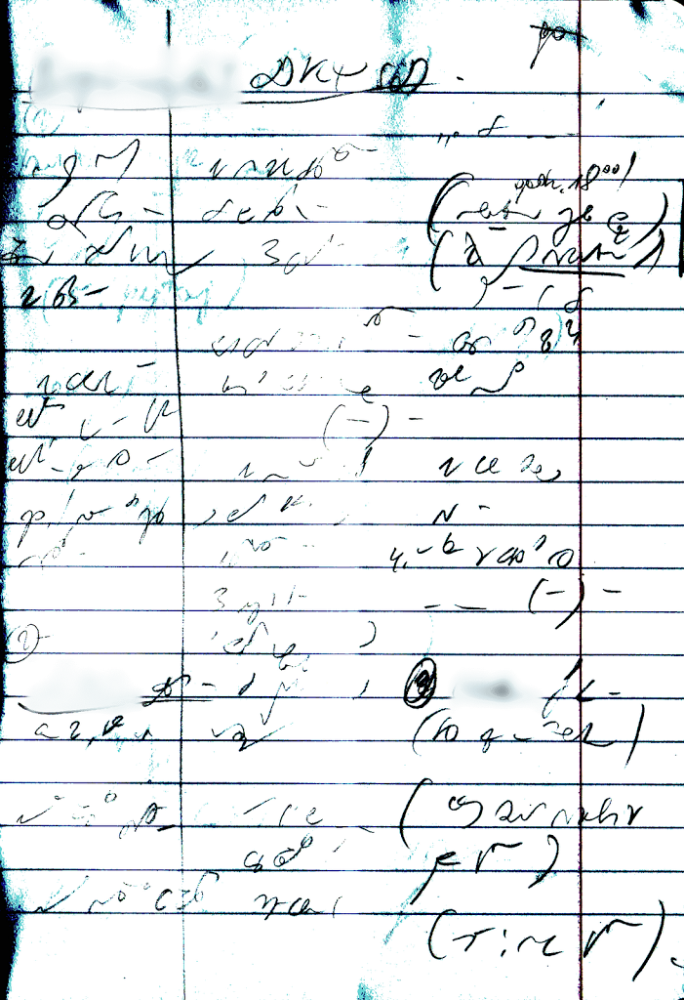
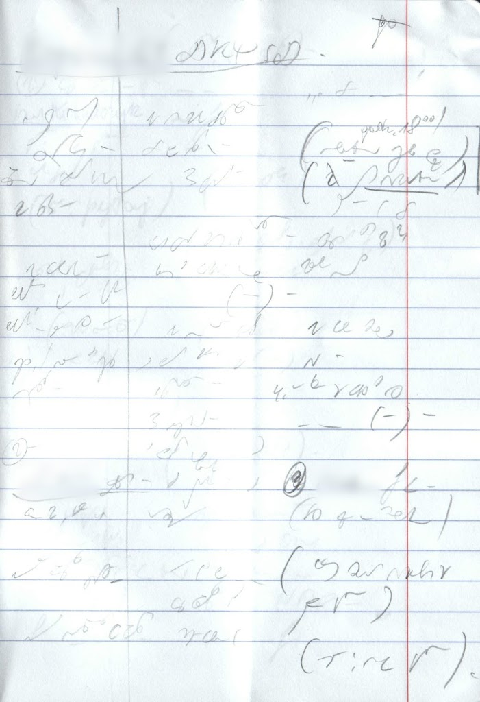

International
InternationalStenogram parlamentarny
2010-10-15 | autor: flamenco108Ciekawscy o zacięciu detektywistycznym zapewne już zdążyli sobie pomyśleć: w linkowanych podręcznikach stenografia przedstawiona jest w formie czyściutkiej, bez omyłek, specjalnie dla uczniów. A jak to wygląda naprawdę?
Oto pierwsza prezentacja prawdziwego stenogramu, prościutko z polskiego Senatu. Współcześnie tak zwane zapisy stenograficzne posiedzeń komisyjnych i plenarnych obu izb polskiego parlamentu są nagrywane prosto z mikrofonów umieszczonych na mównicach oraz tu i ówdzie na sali. Nagrania po drucie wędrują prosto do biur stenograficznych, gdzie na gorąco są przeklepywane przez zespoły maszynistek i redagowane.
Więcej na ten temat na stronach parlamentu.1
Jednak często się zdarza, częściej niż wskazywałoby znaczenie słowa “zdarza się”, więc trzeba by powiedzieć, że każdemu mówcy inni posłowie przerwą przemówienie i to nie raz, nie podchodząc wcale do mikrofonu. Ich wypowiedzi nie zostaną utrwalone przez aparaturę. A przecież są częścią procesu legislacyjnego, który to jest podstawowym i oficjalnie jedynym powodem, dla którego posłowie się zbierają. A do tego nie raz też bywa, że mówca do takiej wypowiedzi wypowiedzianej w powietrze (a przecież nie na wiatr), zamiast, jak się godzi, do mikrofonu, zechce się odnieść, odpowiedzieć, czy też odpyskować. Mikrofon wtedy zapisze tylko połowę tej wymiany zdań i arcyważnych stanowisk, a to przecież żywa historia. Więc nadal na posiedzeniach potrzebni są wykwalifikowani stenografowie, którzy, dzięki lepszemu wyposażeniu w postaci uszu połączonych z mózgiem, potrafią na gorąco odfiltrować proces legislacyjny od szumu tła i go zapisać. Stenograficznie.
Zatem jak wygląda taki stenogram? Otóż zdziwicie się. Tak:

Aby dało się coś zobaczyć na tym skanie, musiałem go trochę “podkręcić”. W rzeczywistości kartka zapisana jest ołówkiem, bez silnego nacisku, zatem linie są cienkie i delikatne, czasami ledwo widoczne.

Taki skan otrzymałem.
Zwracam uwagę na pionowe linie dzielące kartkę na cztery części: pierwsza z lewej jest nakreślona szybko ołówkiem, druga jest wynikiem zgięcia całego zeszytu na pół wzdłuż. Trzecia to wydrukowany standardowo margines - to jest zwykły zeszyt szkolny. Stenograf (pani stenograf) pisała w trzech wąskich kolumnach, na jakie podzielona jest szersza część kartki. Pole za marginesem to “pas lądowania”, żeby ręka nie wyleciała za papier.
Nie, proszę państwa. Nie da się tego przeczytać. Treść tej kartki to słodka tajemnica stenografa. W krajach anglosaskich układano systemy stenograficzne na wzór pisma powszechnego, zatem odpowiednio wprawni stenografowie mogli nawzajem odczytywać swoje zapiski. Brało się to z mnóstwa standardowych skrótów, które dostępne były w formie słowników i pomocy dydaktycznych już na etapie początkowym nauki. Dzięki temu np. George Bernard Shaw mógł pracować w taki sposób, że stenografował sobie jadąc pociągiem do Londynu, gdzie spotykał się z wykwalifikowaną stenotypistką potrafiącą czytać system Pitmana. Ona przepisywała jego wypociny na maszynie i tak powstawał gotowynp. scenariusz kolejnej sztuki teatralnej.
W Polsce nigdy nie doszło do zbudowania tak wyrafinowanych systemów. Stenograf, po osiągnięciu odpowiedniej prędkości pisania, zostawał wypuszczony na szerokie wody - poza podstawowym bagażem skrótów i metod nie posiadał nic. Zatem szybko układał własne skróty, nie tylko na słowa, ale też na związki frazeologiczne i nawet całe zdania. Takie skróty nazywają się “frazeogramy”. Typowym przykładem będzie znany wszystkim, którzy jeszcze kiedyś wysyłali papierowe listy przy pomocy poczty znaczek “W.P.”, którym poprzedzało się imię i nazwisko adresata. Tak czy owak, każdy zawodowy stenograf dysponował własnym zapasem skrótów, dopasowanym do branży, w której pracował najczęściej. Strzegł ich pilnie i z nikim się nie dzielił. Dzięki temu tylko on mógł odczytać swój stenogram.
I co? I stenografia w Polsce umarła, zanim ktoś ją zauważył, a w Commonwealth, Rosji, Brazylii, USA, Kanadzie, Australii, Chinach, Japonii, Niemczech… Tam ma się nieźle. W każdym razie - w porównaniu.
-
Ww. link zaginął w czeluściach internetu. Zatem wklejam inny, chyba na temat. Może przetrwa? ↩︎
2010-10-15 autor: flamenco108